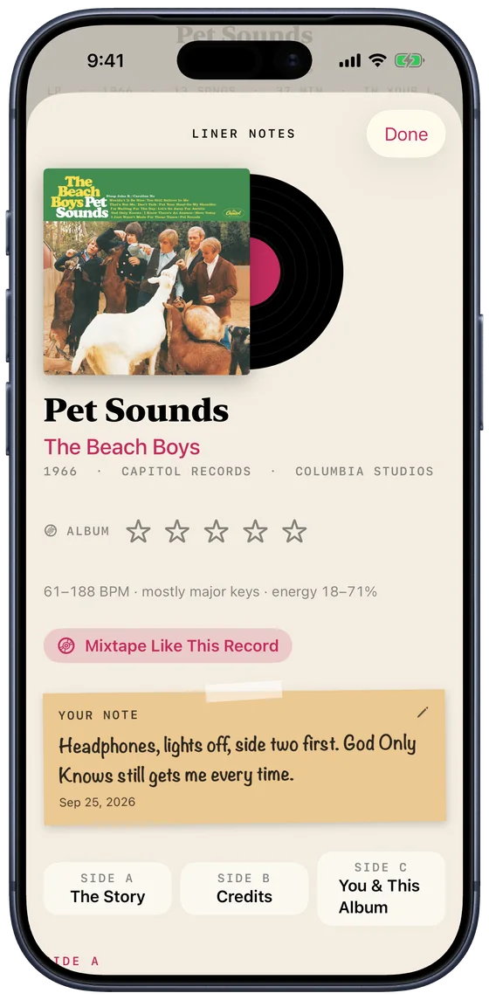
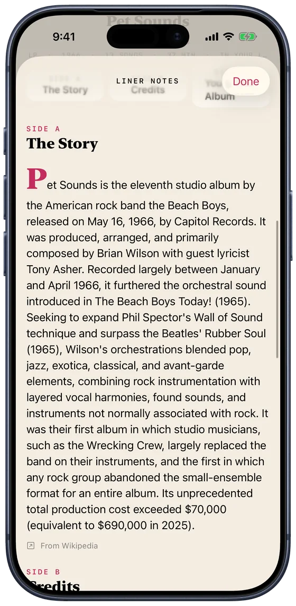
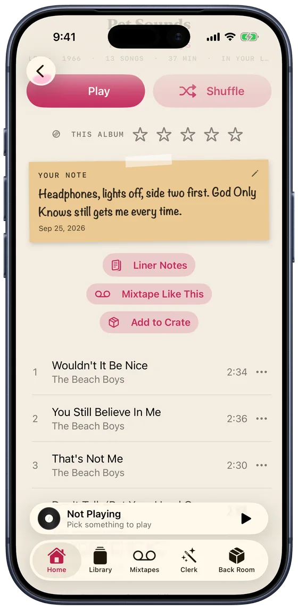
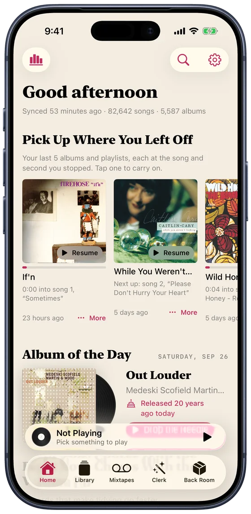
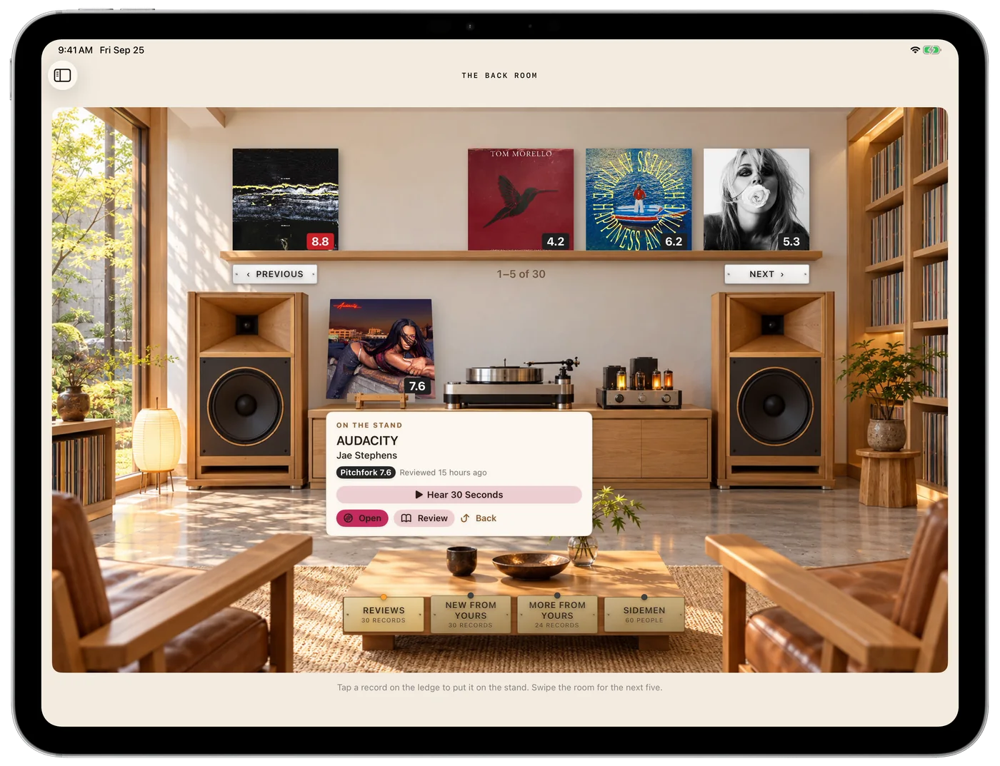
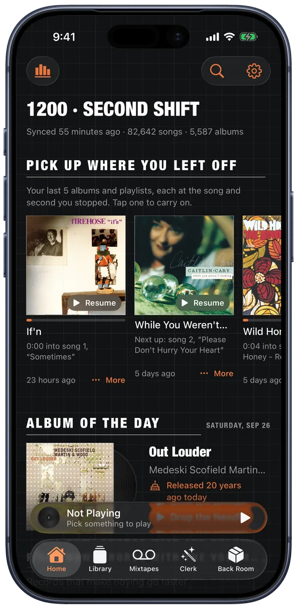

Your music is personal. Your app should be too.
Crate turns your Spotify or Apple Music library into a room full of records you actually own: flip through them, ask for a playlist in plain words, make mixtapes, and see every play you've ever made.


Say what you want to hear.
Type it the way you'd say it to a friend who knows your records. Apple Intelligence reads it, and the Clerk builds the list from songs you already have, never from a stranger's chart.
- Moods, decades, tempo, key, length, "like Tom Waits but not Tom Waits", songs you haven't played since 2012
- Swap, Keep or Remove any song, or ask "Why?" and it tells you
- Save any list as a mixtape, or have it pick fresh every week


Mixtapes that keep themselves up to date.
Set the rules once, like "added in the last month" or "the '90s and not played lately", and the tape changes as your library does. Describe one in a sentence and Apple Intelligence writes the rules for you to check.
Every tape gets a painted cover and a label in your hand. Pick a length from a C46 to a C120 and it splits into Side A and Side B, with a printed insert of liner notes. Crate can also write it into Spotify as an ordinary playlist, so it follows you to the car.


Liner notes for every album, and room for your own.
Open any record's liner notes: the story of how it was made, who played on it and where it was recorded, and a side all about you and this album, from your first play to your favourite song on it.
Then write on the sleeve. A note of your own, in your own words: where you first heard it, which side to start with, who it reminds you of. It shows on the album everywhere, travels to your other devices through iCloud, and mixtapes can pick songs by what you wrote.



Pick up where you left off, to the second.
Crate keeps your last five albums and playlists, each at the song and the second you stopped. Tap one and it carries on.
They follow you: stop a record on your iPhone and it's waiting in your iPad's sidebar, and on CarPlay when you get in the car.

The whole discography, and what's missing from yours.
Open an artist and their records are laid out the way a collector thinks: Albums, Live, Compilations, Soundtracks, Singles & EPs. The ones you have wear a ribbon. The rest are one tap from your library.
"You have 30 of their 54 studio albums." Crate checks MusicBrainz so a live album isn't filed as a studio one, and a soundtrack with one of their songs on it isn't counted as theirs.


Flip through the rack and see where it takes you.
Wander stands artists in the bin of a record shop. Pull one out to hear it, keep it for a crate, or wander on to the next. Any artist works, whether you own them or not.
Every look has a shop of its own, and Follow the Music puts a record in the shop that would stock it: a jazz record in the jazz club. Flip through all seven like records in a crate: tap a tab or the front card, swipe, or use the arrow keys.
A listening room for what's new.
Take a record off the ledge and put it on the stand: its score, when it was reviewed, and a button to hear thirty seconds. Browse by this week's reviews, by new releases from artists in your library, by more from the ones you love, or by the people who played on them.
The video at the top of the page is this room in motion.

Every play, year by year, down to the song.
Stats shows what you really have and how you really listen. Open a year, then a month, then a day, and see each song you played and when. It updates as each song ends.
A real library, as the screenshots show it. Spotify only shares your last 50 plays, so Crate keeps each one as it goes, and Last.fm can fill in everything before.


Dress it like your favourite corner of music.
Each look has its own colours and its own typeface, checked for contrast in light and dark. Or let Crate change look every day.




Your library, not a feed.
One app, either service
Everything here works in both. Pick yours in Settings.
Reads you, privately
Requests are read on your device, or on Apple's Private Cloud Compute for the harder ones. No account, no server of ours.
Wherever you listen
Your crates, pins and mixtapes follow you through iCloud. Say "Ask the Clerk" to Siri from anywhere.